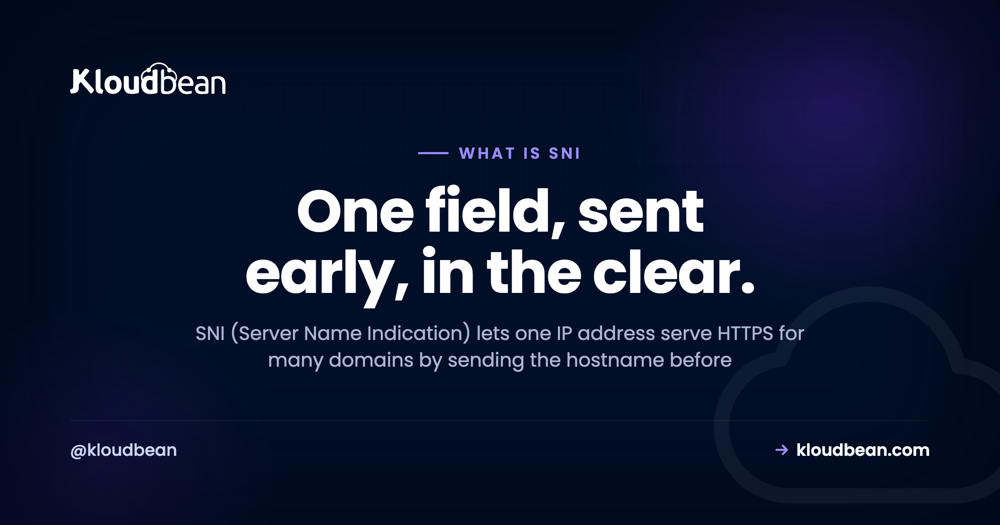
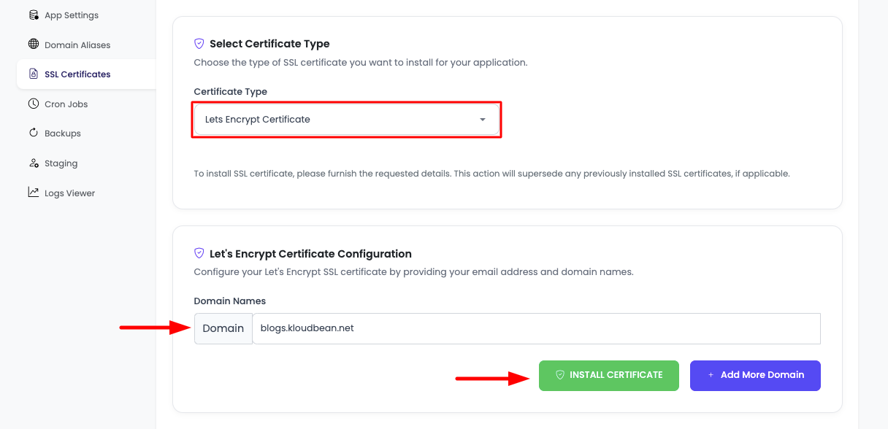

What Is SNI? The TLS Extension That Made Shared HTTPS Hosting Possible

SNI stands for Server Name Indication, and it exists to solve a genuine ordering problem in how the web is layered. HTTPS puts HTTP inside TLS, but the field that says which website you want, the Host header, lives in the HTTP request. That request only travels after TLS is already established. So a server hosting fifty domains has to pick and present one certificate before it has any idea which of the fifty you asked for. SNI fixes that by putting the hostname into the very first TLS message, in plaintext, before encryption exists. That single field is the reason a server can host many HTTPS sites on one IP address, and the reason network operators can still see which sites you visit.
Server Name Indication is a TLS extension that lets a client tell the server which hostname it is trying to reach, inside the first handshake message. Because the server learns the hostname before it has to present a certificate, one IP address can serve HTTPS for many different domains, each with its own certificate. Nearly every client made in the last decade sends SNI, and virtually all shared and cloud hosting depends on it. The catch is that SNI is sent unencrypted, which is what Encrypted Client Hello is designed to fix.
The ordering problem, stated plainly
Virtual hosting on plain HTTP is easy. Many domains point at one IP, a request arrives, and the server reads Host: example.com and routes accordingly. One address, unlimited sites, no difficulty.
HTTPS breaks that, and it breaks it for a structural reason rather than a fixable bug. TLS wraps HTTP, so TLS has to be negotiated first, and part of negotiating TLS is the server sending its certificate. A certificate is bound to specific hostnames. So the server is being asked to prove its identity for a site it has not been told about yet.
Before SNI there were exactly two ways around this. Give every HTTPS site its own IP address, which is why hosts used to sell dedicated IPs as an SSL add-on. Or put every hostname on a single certificate as additional subject alternative names, which works but means every site shares one certificate and every change means reissuing it for everybody.
SNI is a third option and a much better one: have the client say what it wants up front.
What actually goes over the wire, in order
The sequence is the whole explanation, and seeing it in order makes every SNI behaviour obvious.
Two things fall directly out of that ordering. The server can host as many certificates as it likes, because selection happens after it reads the requested name. And the hostname is exposed, because step 2 happens before there is any encryption to hide it in.
This is why shared and cloud HTTPS hosting exists at all
It is easy to treat SNI as trivia. It is closer to load-bearing infrastructure.
IPv4 addresses are genuinely scarce and providers charge for them. If every HTTPS site still needed its own address, hosting several sites on one server with proper certificates would be expensive and awkward, and the free-certificate era would look very different, because issuing a certificate per site is only useful if a server can serve certificates per site.
So when you put four applications on one server, each on its own domain, each with its own certificate, all on one IP, SNI is what makes that legal at the protocol level. Your web server matches the incoming server_name against its virtual hosts and answers with the right certificate.
# Two sites, one IP, one nginx. SNI is what lets this work.
server {
listen 443 ssl;
server_name shop.example.com;
ssl_certificate /etc/ssl/shop/fullchain.pem;
ssl_certificate_key /etc/ssl/shop/privkey.pem;
}
server {
listen 443 ssl;
server_name blog.example.com;
ssl_certificate /etc/ssl/blog/fullchain.pem;
ssl_certificate_key /etc/ssl/blog/privkey.pem;
}Nothing in that configuration mentions SNI, which is rather the point. You never enable it. It is implied by having more than one server_name with its own certificate.
SNI travels in the clear, and that matters
Here is the consequence people miss. HTTPS hides the URL path, the headers, the cookies, and the body. It does not hide which host you asked for, because you announced that before encryption began.
Anyone positioned on the network path, an ISP, a corporate proxy, a national filter, someone on the same café wifi, can read the SNI field and know you connected to a given hostname. They cannot see which page or what you sent. They can see where you went.
That has practical uses in both directions. It is how corporate firewalls implement per-domain policy without decrypting traffic, which is legitimate and less invasive than interception. It is also how censorship regimes block individual sites on shared infrastructure, and how traffic gets profiled. If you have ever wondered how a network blocks one site but not another on the same CDN without breaking TLS, this field is the answer.
Worth being precise about scope: SNI leaks the hostname only. DNS also leaks it unless you use encrypted DNS, so fixing one without the other achieves little, which is a large part of why the two efforts moved together.
Encrypted Client Hello, and why it needs DNS
The fix has been through two generations. The earlier proposal, ESNI, encrypted just the server name. It was superseded by Encrypted Client Hello, which encrypts the sensitive parts of the ClientHello as a whole, because encrypting one field while leaving other identifying fields visible was solving half a problem.
ECH has an obvious bootstrapping puzzle: to encrypt the hostname to the server, the client needs a public key from the server, but it has not connected yet. The answer is to publish the key in DNS, in the HTTPS resource record, so the client fetches the key during name resolution and encrypts the ClientHello on its first attempt.
Which means ECH depends on encrypted DNS to be meaningful. Retrieving an ECH key over plaintext DNS while announcing the hostname in that same query would defeat the purpose entirely. ECH also works best behind a large shared frontend, because the outer, still-visible name can be a shared one while the real hostname hides inside.
Practically, this is not something you configure on an origin server today. It arrives through your CDN or edge provider and your visitors' browsers. Reasonable to understand and not something to chase.
Testing SNI, and the trap that wastes an afternoon
This is the most useful operational content in the article, so treat it as the takeaway if you skim.
When you test TLS with OpenSSL, you must pass -servername. Without it, no SNI is sent, and the server falls back to its default virtual host and hands you that certificate instead.
# WRONG: sends no SNI, so you get the server's default certificate
openssl s_client -connect example.com:443
# RIGHT: sends SNI, so you get the certificate for this hostname
openssl s_client -connect example.com:443 -servername example.com
# Just the identity of the certificate you were served
openssl s_client -connect example.com:443 -servername example.com </dev/null 2>/dev/null \
| openssl x509 -noout -subject -ext subjectAltNameThe failure mode is nasty because it is quiet. The first command usually returns a perfectly valid certificate, just for a different site. So the output looks healthy, you conclude TLS is fine, and you go looking for the problem somewhere else. Meanwhile browsers, which always send SNI, are seeing something different from what you tested. Any time a certificate looks correct on the command line but browsers disagree, check whether you sent -servername.
curl derives SNI from the URL, so it behaves correctly by default. If you are pinning an IP while keeping the hostname, use --resolve, because that preserves SNI where editing the URL to an IP would not send it at all.
# Keeps SNI and Host as example.com while connecting to a specific IP
curl -sSI --resolve example.com:443:203.0.113.10 https://example.com/The SNI failures you will actually meet
| Symptom | Likely cause | Where to look |
|---|---|---|
| Wrong site's certificate served | No matching virtual host, so the default block answered | server_name values, and which block is default_server |
| Correct on the command line, wrong in browsers | You tested without -servername | Re-test with SNI |
| Works for most visitors, fails for a few | A very old client or a middlebox stripping SNI | Client versions, corporate proxies |
| CDN reports an origin TLS failure | Proxy's SNI to origin does not match an origin certificate | Origin host settings at the edge |
| New domain added, old certificate returned | Config not reloaded, or hostname absent from any block | Reload, then re-test with SNI |
The first row is the common one, and it is worth understanding rather than pattern-matching. When SNI arrives with a hostname no virtual host claims, the server does not error. It answers with whichever block is the default. That is deliberate, since refusing would be worse, and it produces the confusing symptom of a valid certificate for the wrong name.
If the failure looks like a handshake collapsing rather than a mismatched name, that is a different diagnosis, and our guide to ERR_SSL_PROTOCOL_ERROR covers protocol and cipher mismatches. If a CDN is reporting the failure, Cloudflare error 525 is the specific case where the edge cannot complete TLS to your origin.
So do you still need a dedicated IP for SSL?
No. That was true in the 2000s and it has not been true for a long time, though the upsell survived the technical justification by a good decade.
Every current browser sends SNI. The clients that could not were Windows XP era Internet Explorer and very early Android, and if your analytics show a meaningful population of those, you have unusual traffic and should verify it rather than trust it, because that signature is also what bots look like.
There are still real reasons to want a dedicated address, and none of them are certificates: a third party needs to allowlist your outbound IP, a regulator or partner requires a fixed address, or you are managing sending reputation for email. Buy one for those. Not for HTTPS.
The operational half of SNI
The honest position is that SNI is not something you should have to think about. It is a protocol detail that a competent server configuration handles implicitly, and the reason to understand it is diagnostic rather than operational.
On Kloudbean, certificates are issued and renewed for you, free, and each application on a server gets its own domain and its own certificate on the shared address, which is SNI doing its job without appearing in your workflow. Add a second application, point a second domain at the same server, and it gets its own certificate. Nothing to enable.
Where it does become visible is at the edge. Cloudflare is available as a paid add-on and free for enterprise accounts, and if you put an edge proxy in front of an origin, the SNI the proxy presents to your origin has to match a certificate the origin holds. That is the one place this stops being invisible, and it is worth knowing before you debug it.

If SNI keeps coming back
For the wider picture, SSL and TLS explained covers the handshake, termination, and why certificates expire. For diagnosis, fixing SSL certificate errors handles validity and chain problems, ERR_SSL_PROTOCOL_ERROR handles handshake failures, and Cloudflare 525 handles edge-to-origin TLS. On the DNS half of the privacy story, DNS lookups, and for HTTPS redirect loops caused by TLS termination, ERR_TOO_MANY_REDIRECTS.
Ship the app, not the infrastructure.
Servers, managed databases, object storage, and a built-in load balancer live behind one login, on the cloud and region you pick. The stack, SSL, patching, and backups are handled for you.
- ✓ Seven cloud providers
- ✓ Managed databases
- ✓ Object storage
- ✓ Automatic backups
- ✓ Free SSL
- ✓ Git deploy
- ✓ Free migration assistance
FAQ
What is SNI in SSL?
Server Name Indication is a TLS extension that carries the hostname the client wants inside the first handshake message, the ClientHello. Because the server receives that name before it has to send a certificate, it can select the right one out of many. Without it, a server holding several certificates would have to guess.
Why is SNI needed if HTTP already has a Host header?
Because of ordering. The Host header is part of the HTTP request, which travels inside the encrypted connection, so it only arrives after TLS is finished and the certificate has already been sent. The server needs the hostname before that point, which is exactly the gap SNI fills.
Is SNI encrypted?
No, not in standard TLS, including TLS 1.3. It is sent in the clear in the ClientHello because there is no shared encryption yet. Anyone on the network path can see which hostname you connected to, though not the path, headers, or content. Encrypted Client Hello is the mechanism designed to close that gap.
What is the difference between SNI and ECH?
SNI is the field that announces the hostname in plaintext. ECH, Encrypted Client Hello, encrypts the sensitive portion of the ClientHello including that hostname, using a public key the server publishes in DNS. ECH replaced the earlier ESNI proposal, which encrypted only the server name and left other identifying fields exposed.
Do all browsers support SNI?
Every browser and operating system in current use sends SNI. The historical exceptions were Internet Explorer on Windows XP and very early Android versions, both long past end of support. If your logs suggest a real population of non-SNI clients, verify it before designing around it, because that pattern is also typical of automated traffic.
Do I need a dedicated IP address for an SSL certificate?
No. SNI removed that requirement long ago, and one address can serve HTTPS for many domains each with its own certificate. Dedicated addresses still have genuine uses, such as being allowlisted by a partner or managing email sending reputation, but certificates are not among them.
Why am I getting the wrong certificate for my domain?
Usually because no virtual host claims that hostname, so the server answered with its default block and that block's certificate. Check that the domain appears in a server_name, that the configuration was reloaded, and which block is marked as the default. Then re-test using -servername, since testing without it reproduces exactly this symptom even when the configuration is correct.
How do I test which certificate SNI returns?
Run openssl s_client -connect example.com:443 -servername example.com and inspect the subject and subject alternative names. Omitting -servername is the classic mistake: it sends no SNI, returns the default certificate, and looks healthy while telling you nothing about the hostname you care about. With curl, SNI is taken from the URL, so use --resolve rather than substituting an IP if you need to target a specific server.
Does SNI affect performance?
Not measurably. It is one extension field in a message that was being sent regardless, so there is no extra round trip and no meaningful processing cost. Certificate selection is a lookup. If TLS feels slow, look at session resumption, whether you are on TLS 1.3, OCSP stapling, and the network round trip instead.